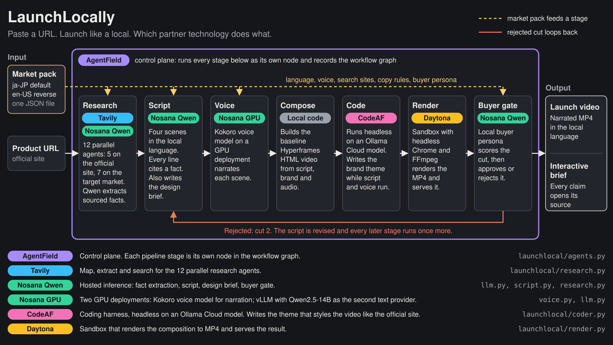

LaunchLocal
Paste a URL. Launch like a local.
URLを貼り付けるだけで、現地に合ったローンチ動画を作ります。
2026年11月14日 · Plug and Play Japan(渋谷)
Problem
課題
A company entering a new market translates its launch material. Local buyers expect more than a translation.
新しい市場に入る企業は、ローンチ資料を翻訳します。しかし、現地の購入者は翻訳だけでは納得しません。
Local proof
現地での実績や事例
Local tone
現地で自然な言葉づかい
Local format
現地で見慣れた構成と体裁
Today this means hiring a local agency and waiting weeks.
現在は、現地の代理店に依頼して数週間待つ必要があります。
What it does
LaunchLocalの処理の流れ
URL and market
Paste a product URL and pick a market.
製品のURLを貼り付け、市場を選びます。
12 research agents
They read the official site and the local web in parallel.
公式サイトと現地のウェブを並行して読みます。
Strategist
Writes a four-scene script in the local language. Every sentence carries a source.
現地の言語で4場面の台本を書きます。すべての文に出典が付きます。
Voice model
Narrates the script.
台本を音声で読み上げます。
Coding agent and sandbox
The agent styles the video like the official site. A sandbox renders it.
動画の見た目を公式サイトに合わせ、サンドボックスでレンダリングします。
Local buyer agent
Approves or rejects the cut. The system fixes what it rejected.
動画を承認または却下します。却下された点はシステムが修正します。
A launch video, plus an interactive brief where every claim opens its source.
ローンチ動画と、すべての記述から出典を開けるインタラクティブな資料を出力します。
Partner technologyパートナー技術の役割
AgentField CodeAF Tavily Nosana Daytona
What breaks without it
ない場合に起きること
| Tavily | No sourced facts. The video is only a translation. 出典付きの事実がなくなり、動画は翻訳だけになります。 |
| Nosana | No script, no review and no narration. 台本、レビュー、ナレーションがすべてなくなります。 |
| Daytona | Nowhere safe to run generated code, and no video. 生成されたコードを安全に実行する場所がなく、動画も作れません。 |
| CodeAF | No restyle. The video does not look like the brand. スタイルの調整ができず、動画がブランドの見た目に合いません。 |
| AgentField | No trace of which agent did what. どのエージェントが何をしたかの記録が残りません。 |
Open source we build on
利用しているオープンソース
Agents エージェント
- AgentField: agent control plane
- CodeAF: coding harness
Video 動画
- Hyperframes: HTML compositions rendered to MP4
- GSAP: animation timeline
- FFmpeg, Chrome Headless Shell
Voice 音声
- Kokoro: text-to-speech model
- Kokoro-FastAPI: server image on the Nosana GPU
- kokoro-onnx, misaki: local fallback
Type 書体
- Noto Sans JP
App アプリ
- FastAPI, Uvicorn, httpx
- OpenAI Python SDK, for OpenAI-compatible endpoints
- tavily-python, Daytona Python SDK
- uv, qrcode.js
Inspiration 着想
- The /brag agent skill (latent-spaces/brag)
- LaunchCut, a past Daytona hackathon project
Honest by design
正確さを守る設計
Every sentence in the video has a source. Unsourced sentences are dropped.
動画のすべての文に出典があります。出典のない文は削除します。
Numbers and prices are copied from sources, never generated.
数値と価格は出典からそのまま転記し、生成しません。
The buyer gate is strict. It can approve or reject.
購入者役の審査は厳格で、承認することも却下することもあります。
Cached runs are labelled as cached.
キャッシュを使った実行には、キャッシュであることを表示します。
Any market
どの市場にも対応できます
Market pack: one JSON file / マーケットパック(JSONファイル1つ)
- Language言語
- Voice音声
- Search locale検索ロケール
- Copy rules文章のルール
- Layout conventionsレイアウトの慣習
- Buyer persona購入者ペルソナ
International product to Japan
海外の製品を日本市場に向けてローンチします。
Japanese product to global, in English
日本の製品を英語で海外に向けてローンチします。
A new market is a new file
ファイルを1つ追加すれば、新しい市場に対応できます。
We launched ourselves with it
自分たちのローンチ動画もLaunchLocalで作りました
The team pointed LaunchLocal at its own website to make its own launch video.
チームはLaunchLocalに自社サイトのURLを渡し、自分たちのローンチ動画を作りました。
Links and numbers
リンクと数値
- Repositoryリポジトリ
- github.com/wei/launchlocal
- Demoデモ
- wei.github.io/launchlocal
sourced facts per run
1回の実行で得る出典付きの事実
agents per run
1回の実行で動くエージェント
seconds from URL to video
URLから動画までの秒数